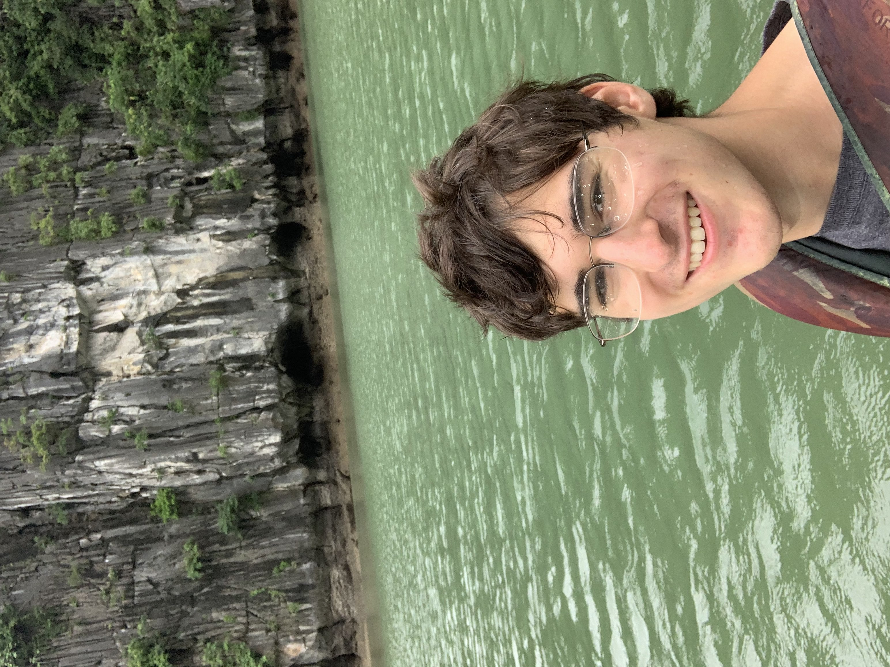

Some of my projects
Internships
Narb
Built the frontend and backend of mobile applications in a collaborative team environment. Built a scalable LLM pipeline.
Finz
Developed and implemented a credit card fraud detection model. Used LLMs to classify Plaid transaction data into categories, predicting business cash flow.
About me
I'm a full stack engineer who loves making things. I like exploring new tools and implementing them into my projects. In my free time I enjoy running with friends, and learning new things.
